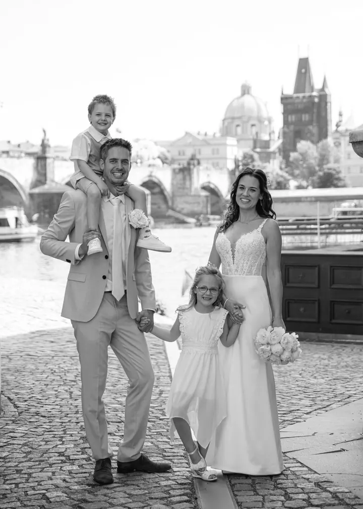
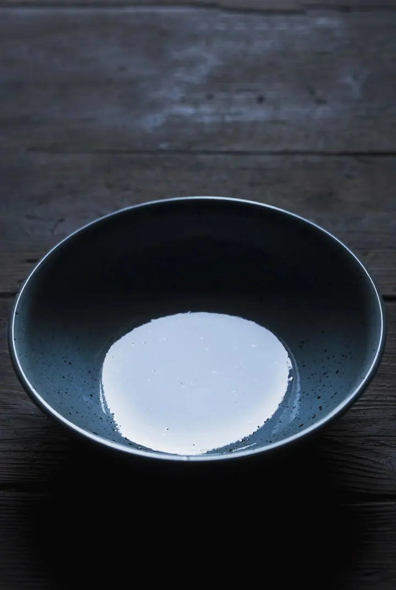
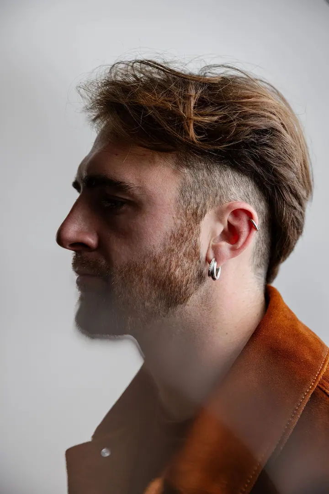
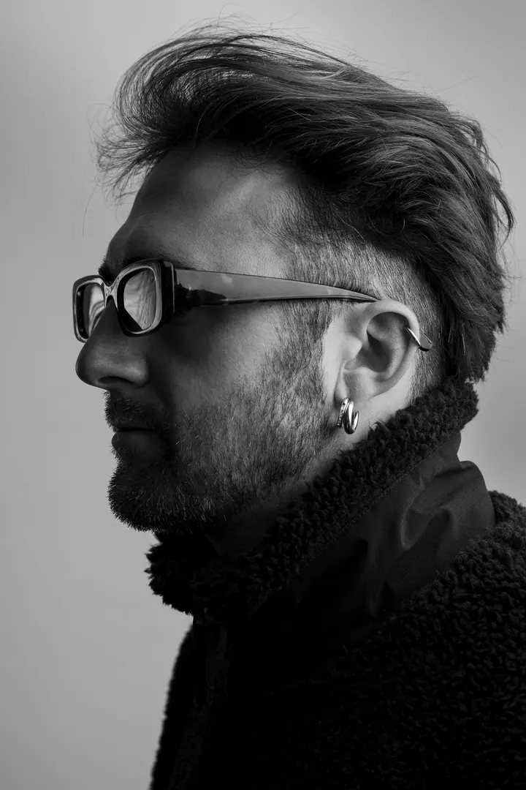
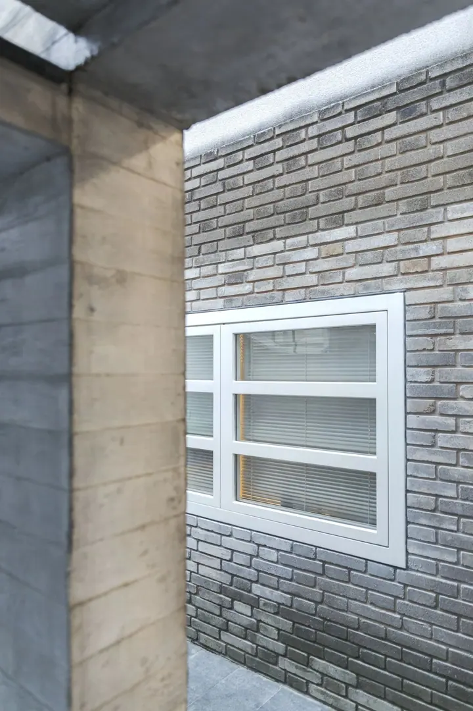
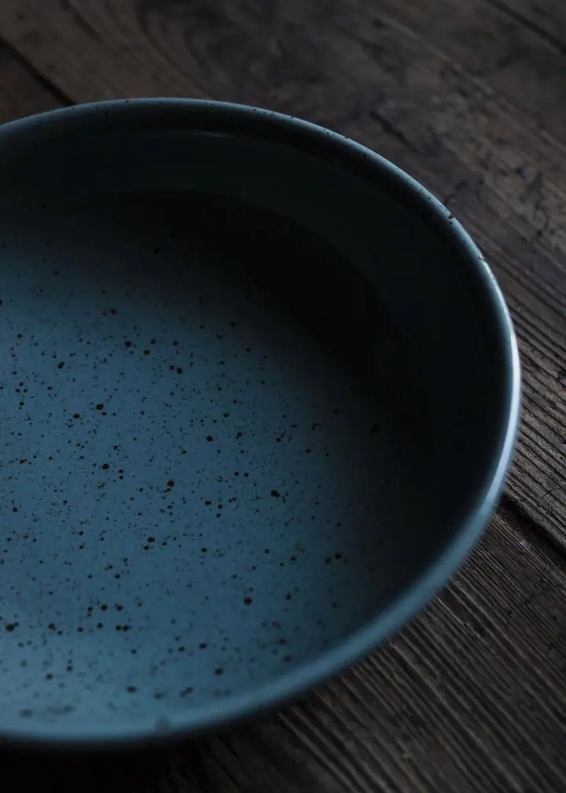
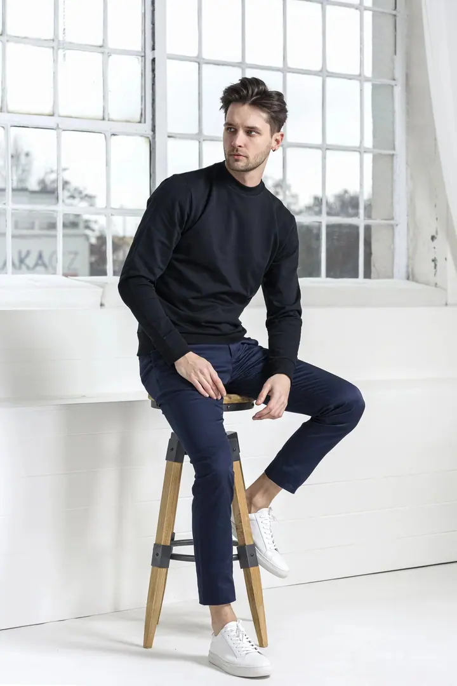
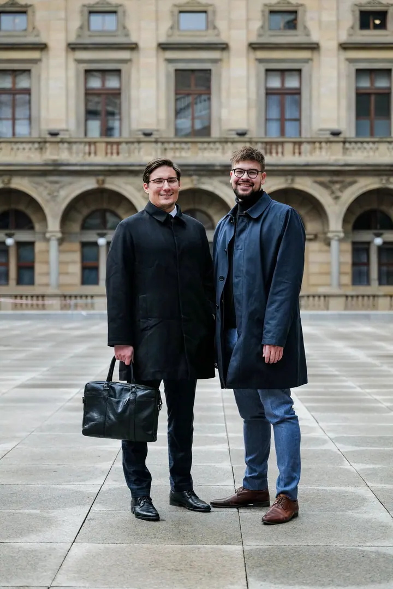
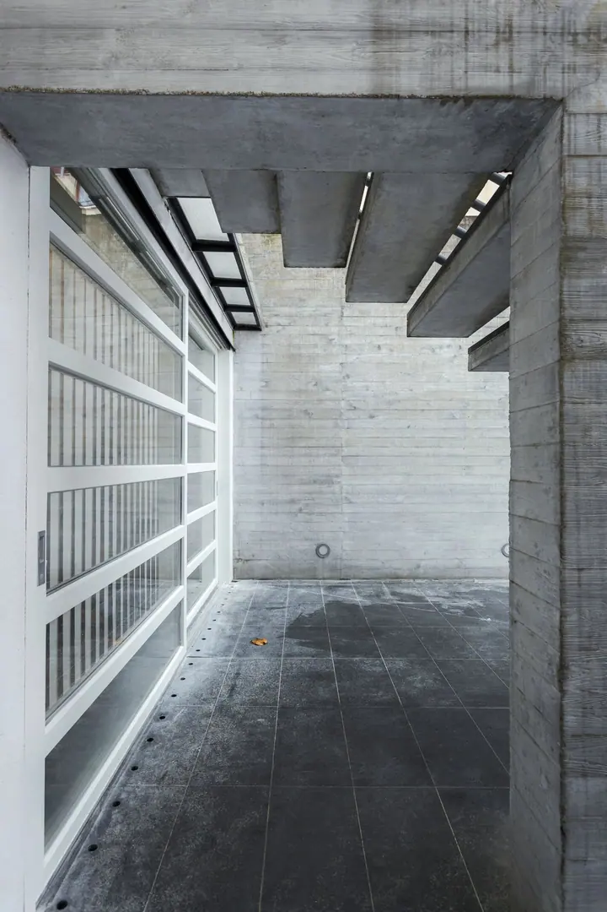
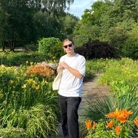

01 / 04
Svatební focení
Fotím malé svatby s obřadem a společnými fotkami, půldenní svatby i celý den od příprav po večerní zábavu. Na přání přidám předsvatební párové focení, focení na film nebo zapůjčení Instaxu.
Zeptat se na termín→








(Nejen) svatební fotograf z Prahy
Zeptat se na termín →(01) Ahoj
Jmenuji se Jan Veselý a jsem (nejen) svatební fotograf se základnou v Praze. Kromě svateb fotím architekturu a interiéry , portréty a produkty . Ve volné tvorbě se věnuji analogové fotografii.
(02) Co fotím
01 / 04
Fotím malé svatby s obřadem a společnými fotkami, půldenní svatby i celý den od příprav po večerní zábavu. Na přání přidám předsvatební párové focení, focení na film nebo zapůjčení Instaxu.
Zeptat se na termín→02 / 04
Architektuře a interiérům se věnuji nejvíc. Zajímá mě design, světlo a čisté linie staveb.
Zeptat se na termín→03 / 04
Fotím osobní, lifestylové i business portréty. Rád pracuji s jednoduchým pozadím a výrazným světlem.
Zeptat se na termín→Dále nabízím
Fotím produkty pro e-shopy, sociální sítě a komerční použití. Výrobek ukážu v detailu a v prostředí, které k němu sedí.
↗(04) Postup
Od první zprávy po hotovou galerii.
Krok 1 z 4
Pošlete mi e-mail s termínem a variantou focení, která vás zajímá. Obratem vám pošlu ceník a nabídku.
Krok 2 z 4
Můžeme se sejít osobně nebo si domluvit předsvatební párové focení. Je to dobrá příležitost poznat se a ujasnit si, co od fotek čekáte.
Krok 3 z 4
Fotím podle zvolené varianty, od obřadu až po celý den. Na přání přidám focení na film a zapůjčím vám Instax Mini.
Krok 4 z 4
Pošlu vám náhledy a vy si vyberete fotky, které upravím. Pokud se nechcete probírat množstvím fotek, výběr klidně nechte na mně.
Fotím digitálně i na film.
(05) Za objektivem
Je mi 29 let a základnu mám v Praze. Fotografii jsem si našel už na střední škole, a tak jsem pokračoval studiem oboru fotografie a média na VOŠg Hellichova. Od té doby své řemeslo dál rozvíjím.
Věřím, že moje práce je lehkým odrazem mé osoby. Zajímá mě umění, hlavně architektura a design, a to je na mých fotkách vidět. Nejvíc fotím architekturu a interiéry, dál komerční, lifestylovou, portrétní a produktovou fotografii.
Na svatbách fotím digitálně, a když budete chtít, i na film. Ve volné tvorbě fotím analogově a dokumentuji svoje cesty. Rád si s vámi předem sednu na osobní schůzku, abychom se poznali a probrali, co by se vám líbilo.

Jan
Jan Veselý · Svatební a komerční fotograf
Svatební focení začíná na 8 000 Kč. Každá varianta má svoje cenové rozmezí a výslednou nabídku vám připravím podle vašich požadavků. Ceník vám rád pošlu e-mailem.
Focení I. je pro krátké svatby (obřad a společné focení), Focení II. pro půldenní svatby s párovým focením a Focení III. pro celý den od příprav po večerní zábavu. Ke každé z nich můžete přidat předsvatební párové focení.
Ano. Fotím na barevný Kodak Portra i černobílý Ilford Delta. Navíc vám můžu zapůjčit dva fotoaparáty Instax Mini, které se hodí hlavně pro svatební album.
Ano, nejvíc se věnuji architektuře a interiérům. Fotím také portréty, produkty, firemní fotky a akce. Napište mi, co potřebujete, a domluvíme se.
(07) Kontakt
Napište pár vět o tom, co si představujete, a termín, který se vám hodí.